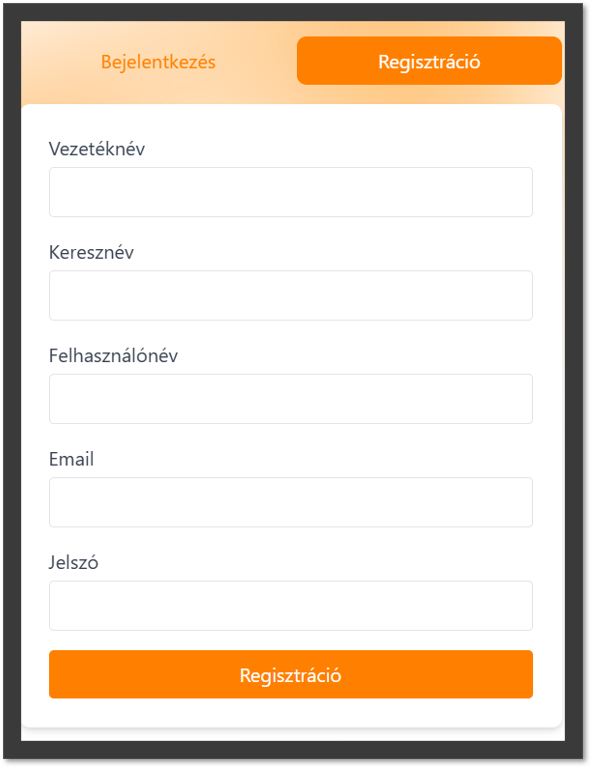

SmartCart Felhasználói Dokumentáció
Tartalomjegyzék
Bejelentkezési és regisztrációs képernyők
A SmartCart alkalmazás elindítása után a login panel felületét látják. Itt regisztrálhatnak meguknak felhasználót, vagy bejelentkezhetnek egy már meglévőbe.
Bejelentkezés
- Bejelentkezési panel – A "Bejelentkezés" fül kiválasztása után a felhasználók megadhatják:
- Felhasználónév – Írják be a regisztrációkor megadott felhasználónevüket.
- Jelszó – Adják meg a fiókhoz tartozó jelszót.
- A szükséges adatok megadása után a "Bejelentkezés" gomb megnyomásával a felhasználók hozzáférhetnek az alkalmazás összes funkciójához.
Regisztráció
- Regisztrációs panel – Az "Regisztráció" fül kiválasztásával a felhasználók új fiókot hozhatnak létre. A következő adatokat szükséges megadni:
- Vezetéknév – A felhasználó vezetékneve.
- Keresztnév – A felhasználó keresztneve.
- Felhasználónév – Az egyedi felhasználónév, amit a bejelentkezéshez használnak majd.
- Jelszó – A fiókhoz tartozó biztonságos jelszó.
- Az összes mező kitöltése után a "Regisztráció" gomb megnyomásával a felhasználók új fiókot hozhatnak létre, és beléphetnek az alkalmazásba.

Fő funkciók
A bevásárlólista funkció lehetővé teszi a felhasználók számára, hogy listát készítsenek a vásárolni kívánt termékekről. Az alábbi lehetőségek állnak rendelkezésre:
Termék neve és mennyisége
- A felhasználók egy szövegmezőben beírhatják a termék nevét és egy külön mezőben a mennyiséget.
- A "Hozzáadás" gomb megnyomásával a termék és a mennyiség bekerül a listára.
- Validáció: Üres mező esetén a "Hozzáadás" gomb nem elérhető, figyelmeztetés nem jelenik meg.
- Egység kiválasztása: A mennyiséghez választható egységek (pl. darab, kg, liter) legördülő menüből választhatók ki.
2. Termékek megjelenítése a listán
Listanézet
- A bevásárlólistán szereplő termékek és azok mennyisége táblázatos formában jelennek meg.
- Minden tételnél legyen egy kis ikon vagy jelzés az egység típusához (pl.: darab, kg).
- Tételek szerkesztése: Az adott termék kiválasztása után a felhasználó módosíthatja a nevét és a mennyiségét, majd egy "Mentés" gombbal frissítheti a listán.
- Tételek törlése: A törlés ikon vagy gomb lehetővé teszi a felhasználónak, hogy eltávolítsa a terméket a listáról.
3. Lista szinkronizálása és megosztása
- Lista mentése és szinkronizálása: A lista automatikusan mentésre kerül a felhasználó profiljához, és több eszköz között is szinkronizálható legyen.
- Közös lista használata: A felhasználók meghívhatnak másokat a bevásárlólistához, és valós idejű szerkesztés válik lehetővé. Ha egy tételt hozzáadnak vagy módosítanak, az azonnal frissül minden csatlakoztatott eszközön.
4. Dinamikus ajánlások
Ajánlások korábbi listák alapján
- A rendszer javaslatokat kínál korábbi bevásárlólisták alapján egy adatbázisból, figyelve a szezonális vagy rendszeresen vásárolt termékek fajtáját.
- Ezek az ajánlások az "Ajánlott termékek" szekcióban jelenhetnek meg, és akár egy kattintással hozzáadhatók a bevásárlólistához.

5. Helymeghatározás alapú funkciók
Boltok, bolti ajánlatok megjelenítése
- Automatikus ajánlatok: Az alkalmazás a felhasználó jelenlegi helyzetének meghatározásával (hálózati alapú GPS helymeghatározás) automatikusan megkeresi a közelben található szupermarketeket, boltokat.
- Akciók listája: Az alkalmazás lekéri az adott bolt adatbázisából az aktív akciókat, és megjeleníti azokat kártya nézetben.
- Személyre szabott ajánlások: Az alkalmazás figyelembe veszi a felhasználó korábbi vásárlási szokásait, és ezek alapján kiemelt ajánlatokat jelenít meg a közelben lévő boltok kínálatából.
Üzletek elérhetőségei és térképnézet
- Interaktív térkép: A térképen megjelennek a felhasználó közelében lévő boltok ikonokkal jelölve. Az ikonok függnek az bolt fajtájától (pl.: szupermarket, vegyesbolt)
- Navigációs opciók: A felhasználók rákattinthatnak az egyes boltok ikonjaira, ahol részletes információkat láthatnak, például a bolt pontos címe, nyitvatartási idő, elérhetőségek.
- Térkép- és műholdas nézet váltás: Az alkalmazás támogatja a térkép- és műholdas nézet közötti váltást egy jobb sarokban található gombbal, hogy a felhasználók a számukra szimpatikusabb nézetet használhassák.
- Útvonaltervezés: Az alkalmazásba integrált térkép API lehetőséget biztosít az útvonaltervezésre is, így a felhasználó könnyen megtalálhatja az útvonalat a választott bolt felé.
6. Készletfigyelés
- Lejárati figyelmeztetés: A rendszer automatikusan figyeli a termékek felhasználó által megadott lejárati idejét, és figyelmeztetést küld, ha egy termék hamarosan lejár.
- Pl.: "2 nap múlva lejár" jelzés piros színnel kiemelve, hogy a felhasználó gyorsan észrevegye.
- Kifogyási állapot: Ha egy termék közel áll a kifogyáshoz, a rendszer "Kifogyóban" státusszal jelzi ezt a felhasználónak. A "Kifogyóban" státusz szintén kiemelve jelenik meg, piros vagy más figyelemfelkeltő színnel.
- Készlet frissítése: A "Készlet frissítése" gomb lehetőséget biztosít a felhasználóknak, hogy manuálisan frissítsék a készlet állapotát. A gomb megnyomásával a rendszer újraellenőrzi a készlet adatait, és frissíti a státuszokat.
7. Termékek
- Terméklista: A felhasználók láthatják a manuálisan szerkeszthető táblázatban az otthon elérhető termékek nevét és árát.
- Pl.:"Tej – 300 Ft", "Kenyér – 150 Ft", "Sajt – 500 Ft".
- Ez a lista vizuálisan jól elkülöníthető elemekből álljon, például sorokba rendezve, ahol a termék neve és ára külön oszlopban jelenik meg.
- Költséghatékony vásárlás: Az aktuális árak megjelenítése segíti a felhasználókat a költségek áttekintésében, így könnyen tervezhetik meg a következő bevásárlást. A felhasználók számára világosan látszik, mely termékek állnak rendelkezésre otthon, és azok ára a választott boltban, ami segít a vásárlási döntések meghozatalában.
8. Közösségi funkciók
- Barátok meghívása: A felhasználók meghívhatják barátaikat az alkalmazás használatára egy linkkel társított meghívó küldésével (pl.: SMS, iMessage, Messenger, stb), ami az alkalmazás App Store vagy Google Play oldalára irányítja a meghívottat. Amikor a meghívott személy regisztrál a kapot linken, automatikusan hozzáadódik a meghívó felhasználó barátai közé és egyből lehetővé téve a közös funkciók használatát.
- Recept megosztása: A felhasználók megoszthatják saját receptjeiket a barátaikkal vagy nyilvánosan az alkalmazás receptmegosztó felületén. A recept tartalmazza a hozzávalókat, az elkészítési időt, és a részletes lépéseket. Megosztás előtt a felhasználó választhat olyan opciót, hogy a recept privát vagy nyilvános legyen.
- Akció megosztása: A felhasználók küldhetnek értesítőt a barátaiknak az aktuális akciókról, amelyeket az alkalmazás helymeghatározás alapján megjelenít. Az akció megosztásakor a felhasználók hozzáadhatják az akció részleteit, például a termék nevét, árát, és az akció végének dátumát. Az akciókat közvetlen üzenetként is megoszthatják a barátaikkal az alkalmazáson belül privát chatablak nyitásával.
- Közös lista: A közös bevásárlólista funkció lehetővé teszi, hogy a felhasználók akár egy háztartáson belül közösen kezeljék ugyanazt bevásárlólistát. A listához minden felhasználó hozzáadhat és eltávolíthat tételeket, amelyek azonnal szinkronizálódnak minden csatlakoztatott felhasználó eszközén. A közös lista frissítése során az alkalmazás értesítést küld a többi felhasználónak a változásokról, így mindenki naprakész marad.
9. Receptek
- Új recept hozzáadása: A felhasználók manuálisan vihetnek fel új recepteket, megadva a recept nevét, hozzávalókat, elkészítési időt és lépésről-lépésre történő útmutatót. A felhasználó hozzáadhat képeket is a recepthez, hogy vizuálisan is megjelenítse az elkészítési folyamatot vagy a kész ételt. A mentett receptek a felhasználó profiljához kapcsolódnak, így könnyen elérhetők a későbbiekben is.
- Recept böngészése: A felhasználók böngészhetnek a mások által megosztott receptek között, kategóriák vagy népszerűség szerint szűrve a találatokat. Ha internetkapcsolatuk van, a felhasználók külső weboldalról is kereshetnek akár új recepteket, amelyek könnyedén hozzáadhatók az alkalmazás receptjeihez. Minden recepthez tartoznak értékelések és hozzászólások, így a felhasználók megoszthatják tapasztalataikat és ötleteiket a közösséggel.